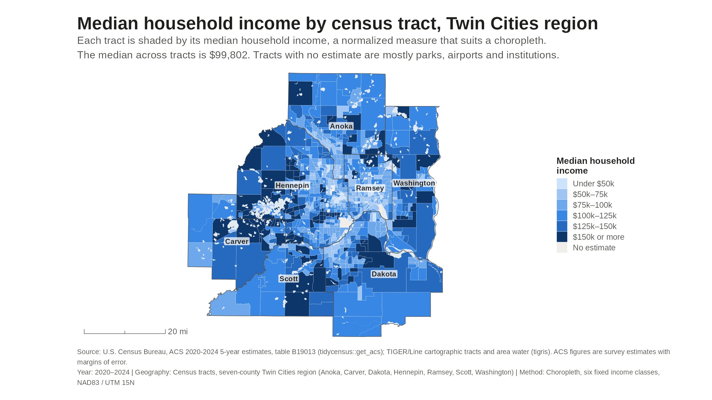
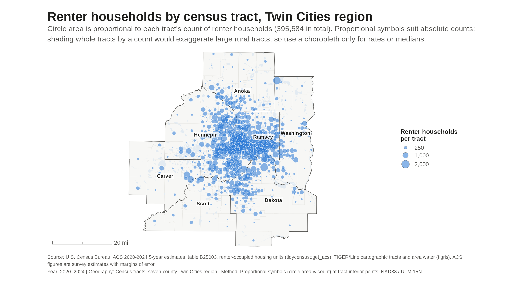
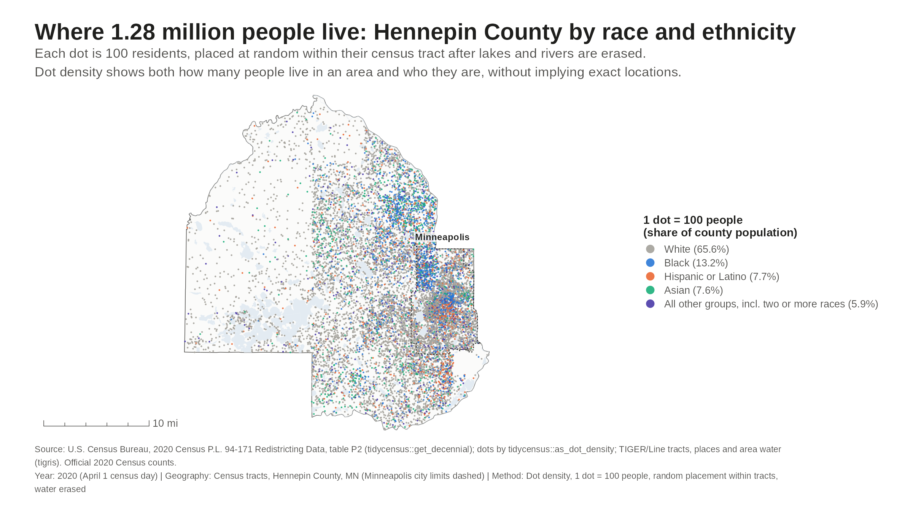
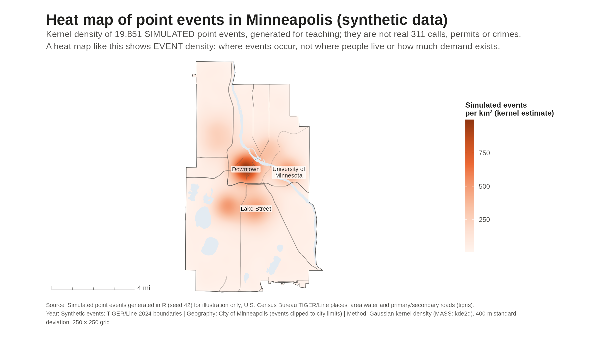
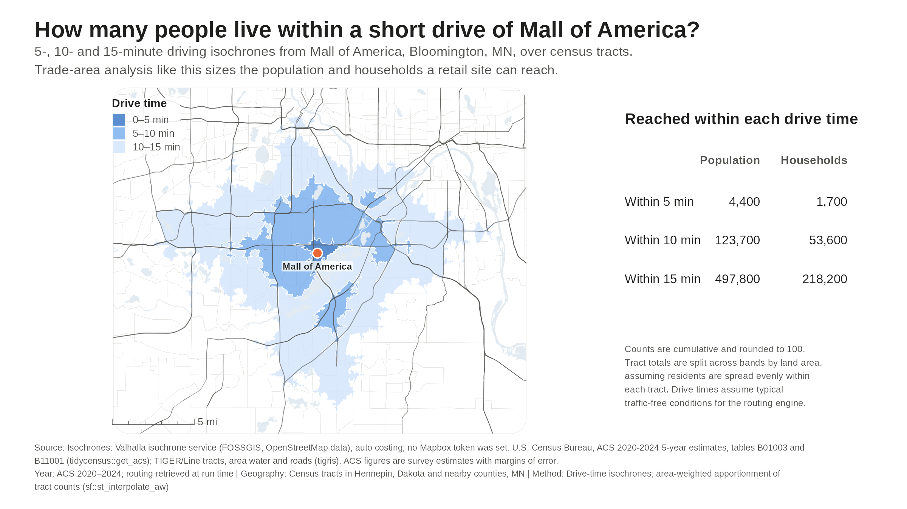
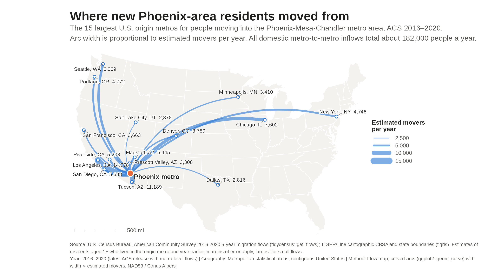

Six geospatial map types for real estate analysis
Slide-ready examples built in R from public data (U.S. Census Bureau; OpenStreetMap-based routing for the isochrones) plus one clearly labeled synthetic dataset. Click a map to open the full 2400×1350 PNG.

1. Choropleth Shades each Twin Cities census tract by its ACS 2020–2024 median household income, a normalized measure that suits area shading.

2. Proportional symbols Sizes a circle by each tract's count of renter households, the right way to map absolute counts rather than rates.

3. Dot density Places one dot per 100 residents of Hennepin County from the 2020 Census, colored by race and ethnicity, with water erased.

4. Heat map Turns simulated point events in Minneapolis into a kernel-density surface, showing event density rather than population or demand.

5. Isochrones Draws 5-, 10- and 15-minute drive-time areas around Mall of America and estimates the population and households each one reaches.

6. Flow map Connects the 15 largest origin metros to Phoenix with arcs whose width shows ACS 2016–2020 estimated movers per year.
Sources and methods are printed in each map's footer and listed in sources.md . Code: the R/ folder; rebuild with Rscript run_all.R.